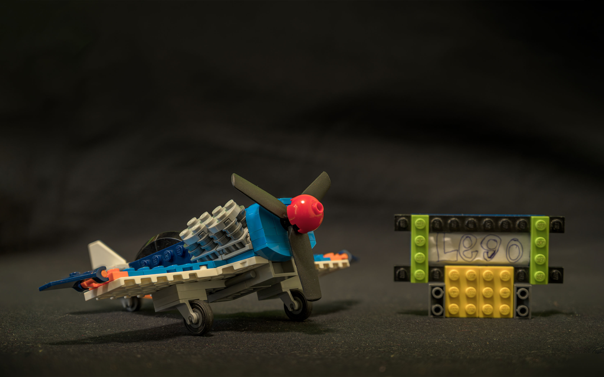
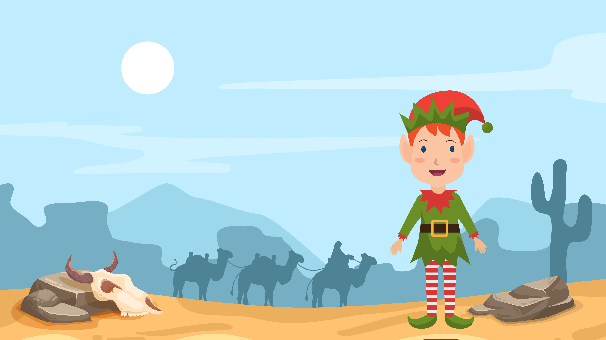

Collection of Stories by Chwame Deron B. Lynser
The Invasion
In the 2070's there was an alien invasion throughout the decade, in 2080 it all changed a group of humans that survived and had a plan to make a rocket and they had an idea to put three hyper speed crystals in one thruster and they had to figure out a serum and turn it in a crystal and then figure out if it could achieve hyper speed, and then after 50 tries they finally found the perfect crystal they copied it but then the aliens found there base they ran to the spaceship installed the crystals and blasted into space they knew the aliens would find them and capture them so they did not stop until they found a suitable planet to live in and then finally they found a planet that was suitable they settled down and they told their children about this and lived happily on the planet.
Lucas the Elf
Once upon a time there was a shoe shop called the Designers. The shop’s owner is Lucas but the town did not know Lucas was an elf. Lucas made the shoes out of magic no wonder they were so perfect. But one day his magic disappeared and all the shoes were gone because his shoes were made out of magic. The shoes cannot be solid without his magic. So they collapsed into particles and the Designers had to close. Lucas went away to the land of magic for answers. He had to find a doctor. He didn’t have to walk long because the doctor’s office was a few meters away and the doctors knew every single magic illness. But when he got there, the office was empty and there was nothing except a desk. A fairy came out of nowhere and asked him what illness he had and he told him everything. When Lucas had finished talking, the doctor said there’s only one cure and he had to drink camel’s blood. So he had to go to the desert. While he was going, there was a river in the way. He went to find a log so he could cross the river. Then he found a long log and crossed the river. He was in the desert trying to find a camel and he found a dead camel who had bled. He took the camel’s blood and drank it. He got back his magic. He teleported himself back home. The shoes came back, the Designers was opened again and he lived happily ever after.